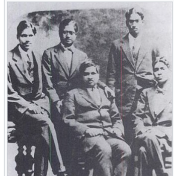

In 1910, Ramanujan met deputy collector V. Ramaswamy Aiyer , who founded the Indian Mathematical Society. 52 Wishing for a job at the revenue department where Aiyer worked, Ramanujan showed him his mathematics notebooks. As Aiyer later recalled:
I was struck by the extraordinary mathematical results contained in (the notebooks). I had no mind to smother his genius by an appointment in the lowest rungs of the revenue department. [52]
Aiyer sent Ramanujan, with letters of introduction, to his mathematician friends in Madras [52]. Some of them looked at his work and gave him letters of introduction to R. Ramachandra Rao, the district collector for Nellore and the secretary of the Indian Mathematical Society [54][55][56] Rao was impressed by Ramanujan's research but doubted that it was his own work. Ramanujan mentioned a correspondence he had with Professor Saldhana, a notable Bombay mathematician, in which Saldhana expressed a lack of understanding of his work but concluded that he was not a fraud [57]. Ramanujan's friend C. V. Rajagopalachari tried to quell Rao's doubts about Ramanujan's academic integrity, Rao agreed to give him another chance, and listened as Ramanujan discussed elliptic integrals, hypergeometric series, and his theory of divergent series, which Rao said ultimately convinced him of Ramanujan's brilliance [57]. When Rao asked him what he wanted, Ramanujan replied that he needed work and financial support. Rao consented and sent him to Madras. He continued his research with Rao's financial aid. With Aiyer's help, Ramanujan had his work published in the Journal of the Indian Mathematical Society [58]. One of the first problems he posed in the journal[30] was to find the value of: 
√1+2√1+3√1+...He waited for a solution to be offered in three issues, over six months, but failed to receive any. At the end, Ramanujan supplied an incomplete[59] solution to the problem himself. On page 105 of his first notebook, he formulated an equation that could be used to solve the infinitely nested radicals problem.
x+n+a = √ax+(n+a)2+x√a(x+n)+(n+a)2+(x+n)√...Using this equation, the answer to the question posed in the Journal was simply 3, obtained by setting x=2, 𝑛 =1 and a=0.[60] Ramanujan wrote his first formal paper for the Journal on the properties of Bernoulli numbers. One property he discovered was that the denominators of the fractions of Bernoulli numbers (sequence A027642 in the OEIS ) are always divisible by six. He also devised a method of calculating Bnbased on previous Bernoulli numbers. One of these methods follows: It will be observed that if n is even but not equal to zero,
1. Bn is a fraction and the numerator of Bn-n in its lowest terms is a prime number,
2. the denominator of Bn contains each of the factors 2 and 3 once and only once,
3. 2n(2n-1)Bn-nis an integer and 2(2n-1)Bn consequently is an odd integer.In his 17-page paper "Some Properties of Bernoulli's Numbers" (1911), Ramanujan gave three proofs, two corollaries and three conjectures. [61] His writing initially had many flaws. As Journal editor M. T. Narayana Iyengar noted:
Mr. Ramanujan's methods were so terse and novel and his presentation so lacking in clearness and precision, that the ordinary [mathematical reader], unaccustomed to such intellectual gymnastics, could hardly follow him. [62]
Ramanujan later wrote another paper and also continued to provide problems in the Journal [63] In early 1912, he got a temporary job in the Madras Accountant General's office, with a monthly salary of 20 rupees. He lasted only a few weeks [64] Toward the end of that assignment, he applied for a position under the Chief Accountant of the Madras Port Trust.